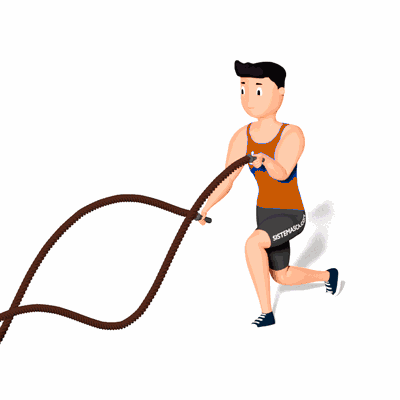

Ondulação de Corda Naval com Afundo Alternado

O exercício tem como objetivo o fortalecimento e hipertrofia dos músculos das pernas e também auxilia no condicionamento cardiorrespiratório.
Ficha Técnica
Tipo: CrossFit
Grupo Muscular: Corpo
Aparelho: Nenhum
Músculos: Nenhum
Como realizar
- Em pé, segure cada extremidade da corda com uma das mãos;
- Projete uma das pernas a frente e desça o corpo flexionando o joelho em um ângulo de 90 graus até a coxa ficar em paralelo ao solo;
- Inicie a ondulação alternada das cordas e ao mesmo tempo realize saltos para alternas a posição das pernas;
- Repita os movimentos pela quantidade de tempo determinada pelo professor(a).
 RC STORE
RC STORE